1과목: 유통물류일반
1. 아래 글상자에서 유통경로의 사회·경제적 기능 설명으로 옳은 것을 모두 고르면?
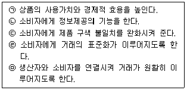
2. 소매업을 분류하는 기준에 대한 설명으로 가장 옳지 않은 것은?
3. 유통 경로의 목표를 설정할 경우, 각 특성별로 고려해야 할 사항으로 가장 옳지 않은 것은?
4. 조직몰입(organizational commitment)에 대한 설명으로 가장 옳지 않은 것은?
5. 경로 커버리지 전략을 선택하는 데 있어 고려해야 할 요소로 가장 옳지 않은 것은?
6. 아래 글상자에서 시장점유율에 관한 설명으로 옳은 것을 모두 고르면?
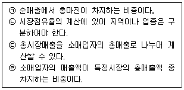
7. 아래 글상자의 괄호 안에 들어갈 용어가 순서대로 나열된 것으로 가장 옳은 것은?
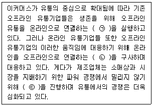
8. 소매점의 판매목표 설정과 관련한 설명으로 가장 옳지 않은 것은?
9. 아래 글상자에서 앤소프(Ansoff, H. I.)의 경영전략에 대한 내용으로 옳은 것을 모두 고르면?
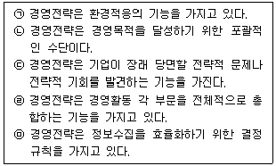
10. 옴니채널의 사례로 가장 옳지 않은 것은?
11. 유통기업 결합형태에 따른 인수 및 합병(M&A)의 유형과 내용 설명이 가장 옳은 것은?
12. 아래 글상자의 괄호 안에 들어갈 단어로 가장 옳은 것은?
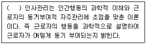
13. 전략적 이익 모형과 관련된 설명으로 가장 옳은 것은?
14. 아래 글상자의 내용을 이용하여 제품의 손익분기점을 계산한 것으로 옳은 것은?
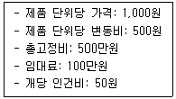
15. 아래 글상자의 자료를 이용해서 A사의 경제적주문량을 옳게 계산한 것은?
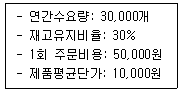
16. 물류정보에 관한 설명으로 가장 옳지 않은 것은?
17. 아래 글상자에서 글로벌 제품조직(global product structure)에 대한 설명으로 옳은 것을 모두 고르면?
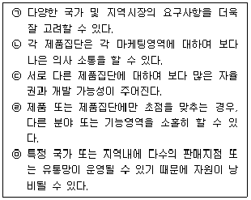
18. 공급망의 원활한 운영을 방해하는 잠재적인 위험으로 가장 옳지 않은 것은?
19. 침투가격(penetration pricing) 전략이 적용되는 경우의 설명으로 가장 옳지 않은 것은?
20. 정량주문법과 정기주문법을 비교한 설명으로 가장 옳은 것은?
21. POS(point of sales)시스템의 업무처리절차가 옳게 나열된 것은?
22. 물류활동 중 보관활동에 대한 설명으로 가장 옳지 않은 것은?
23. 포장의 유형 중 목적별 분류에 대한 설명으로 가장 옳지 않은 것은?
24. 기업이 윤리경영을 실천해야 하는 이유로 가장 옳지 않은 것은?
25. 유통산업발전법(법률 제20444호, 2024. 9. 20., 일부 개정)에 의한 유통관리사 관련 내용으로 가장 옳지 않은 것은?
2과목: 상권분석
26. 상가건물 임대차보호법 시행령(대통령령 제35162호, 2024. 12. 31., 일부개정)은 아래 글상자와 같이 상가 임대료의 인상률 상한(차임 등 증액청구의 기준)을 규정하고 있다. 괄호 안에 알맞은 것은?
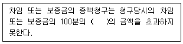
27. 중심지이론을 적용해 봤을 때 동일계층의 중심지가 여러 개 존재하는 지역에서 중심지 간 경쟁과 소외지역을 최소화 하는 중심지 상권의 모양으로 가장 옳은 것은?
28. 넬슨(R.L. Nelson)의 입지원칙 중에서 상호 보완관계에 있는 점포가 서로 인접하여 있는 경우에 고객 흡인력을 높일 수 있다는 특성으로 병원 근처에 약국이 입지한다든가 식당가 근처에 카페가 분포하는 것과 가장 관련이 높은 원칙은?
29. 중심지 상권의 계층성을 설명하는 중심지이론의 고차원 중심지와 저차원 중심지의 비교설명으로 가장 옳지 않은 것은?
30. GIS(지리정보시스템)를 활용한 상권분석과 입지의사결정에 대한 설명으로 가장 옳지 않은 것은?
31. 다수의 임대점포로 구성되는 대형상가인 쇼핑센터는 임차인 믹스(tenant mix)가 중요하다. 일반적으로 쇼핑센터의 성격을결정짓고 다수의 고객을 끌어들이는 중심적 역할을 하고, 보통 쇼핑센터에서 매장면적을 크게 점유하여 일반에게 지명도가 높은 상징적 점포를 의미하는 것은?
32. S지역에 거주하는 소비자들이 이용할 수 있는 점포가 3개만 존재한다. 다음 자료와 Huff모델을 사용하여 소비자들의 이용 확률이 가장 높은 점포와 그 확률을 구한 것으로 옳은 것은? (단, 소비자들의 점포면적에 대한 민감도는 +2, 거리에 대한 민감도는 –2이다.)
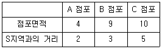
33. 다음 중 상권분석의 내용으로 가장 옳지 않은 것은?
34. 도시와 도시, 지역과 지역간에 관찰할 수 있는 역외구매(outshopping) 현상과 관련한 설명으로 옳지 않은 것은?
35. 점포의 입지분석과 관련된 설명으로 그 내용이 옳지 않은 것은?
36. 아래 글상자의 항목 가운데 쇼핑몰 입지의 장점들만을 모두 포함한 내용으로 가장 옳은 것은?
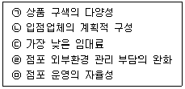
37. 소비자의 동선을 파악하기 위해서는 개별 통행자의 심리 상태에 대한 원리를 이해하는 것이 중요하다. 목적지를 향한 인간의 심리상태를 나타내는 원리에 대한 설명으로 옳지 않은 것은?
38. GIS(지리정보시스템)의 기능 중 중첩(overlay)은 공간적으로 동일한 경계선을 가진 두 지도 레이어들에 대해 하나의 레이어에 다른 레이어를 겹쳐 놓고 지도 형상과 속성들을 비교하는 기능이다. 중첩의 기능에 해당되지 않는 것은?
39. 권리금에 대한 설명 중 옳은 것은?
40. 점포를 중심으로 거리가 멀어질수록 소비자의 구매행동에 차이가 있다는 인식을 근거로 소매점포의 상권을 전략적 차원에서 구분한다. 이와 관련한 설명이 타당하지 않은 것은?
41. 백화점이나 쇼핑센터 등 다층구조의 대형소매점에서 개점계획 시 공간배치 관련 의사결정을 내릴 때 매장을 찾는 고객의 동선(動線)을 전략적으로 유도하여 매출을 극대화하려는 목적으로 샤워효과, 분수효과, 나비효과를 고려하기도 한다. 이와 관련한 일반적 내용으로 옳지 않은 것은?
42. 점포를 개점할 때는, 행정관청에서 사업자등록번호를 부여받고 사업자등록증을 교부받아야 한다. 이와 관련된 아래의 내용 중에서 옳지 않은 것은?
43. 특정 지역상권 내에서 신규 개점을 하려 한다. 상권규모와 경쟁상태는 아래 글상자의 내용과 같다. 매장면적을 기준으로 매출액을 예상하여 개점전략을 수립하려 한다. 신규 개점 점포의 예상매출액은 얼마인가?
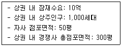
44. 입지의사결정 과정에서 평가요소가 되는 소매점포의 외부 특성이나 내부 레이아웃과 관련된 일반적 설명으로 내용이 타당하지 않은 것은?
45. 소매점포의 신규개설 시 개점할 입지결정, 기존 소매점의 폐점, 점포이전, 점포규모의 축소 및 확대와 관련한 의사 결정에 활용할 수 있는 Huff모델과 관련한 설명으로 옳지 않은 것은?
3과목: 유통마케팅
46. 효과적인 시장세분화의 요건으로서 아래 글상자의 괄호 안에 들어갈 내용으로 가장 옳은 것은?
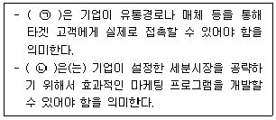
47. 소셜미디어에 대한 설명 중 가장 옳지 않은 것은?
48. 재고자산의 손실은 감모손실과 평가손실로 구분한다. 다음 중 감모손실의 직접적 관리 대상으로 가장 옳지 않은 것은?
49. 아래 글상자에서 설명하는 진열방식으로 옳은 것은?
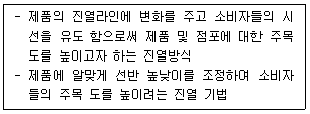
50. 거래형 마케팅(transactional marketing)과 관계형 마케팅(relational marketing)을 비교한 내용 중에서 옳지 않은 것은?
51. 성장 기회를 확보하려는 유통업체가 기존사업을 개선하여 경쟁사의 고객을 확보하거나 주요 표적 고객이 아니었던 소비자를 끌어들이는 전략으로서 가장 옳은 것은?
52. 아래 글상자는 소매업의 주요 경쟁 요인을 나열하고 있다. 다음 중 시간의 흐름에 따른 소매업체 간 경쟁 요인의 진화 과정에 대한 기술로서 가장 옳은 것은?
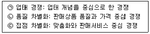
53. 머천다이징(merchandising)은 좁은 의미(협의) 또는 넓은 의미(광의)로 정의할 수 있다. 협의의 머천다이징의 정의 로서 가장 옳은 것은?
54. 수명주기의 차이 때문에 상품별로 구매계획 수립의 용이성이 다르다. 다음 중 구매계획 수립의 용이성이 가장 높은 상품 유형으로 옳은 것은?
55. 다음 중 가격에 대한 설명으로 가장 옳은 것은?
56. 아래 글상자의 괄호 안에 들어갈 판매촉진 관련 용어를 바르게 나열한 것은?
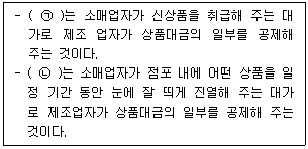
57. 다음 중 자사 웹사이트에 대한 검색엔진 최적화(SEO)의 목적으로 가장 옳은 것은?
58. 광고에 노출된 소비자들에게 광고의 내용 및 광고된 제품에 대해 소비자 스스로가 기억하는 내용을 파악하는 광고 사후조사 방법에 대한 용어로서 가장 옳은 것은?
59. 기존의 마케팅 커뮤니케이션과 인터랙티브 캠페인의 특징을 비교한 내용으로 옳지 않은 것은?
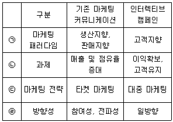
60. 다음 중 장부재고 오류에 대한 설명으로 가장 옳은 것은?
61. 유통경로 성과와 관련된 각종 지표에 대한 설명으로 가장 옳지 않은 것은?
62. 디지털 마케팅의 측정지표에 관한 설명으로 가장 옳지 않은 것은?
63. 아래 글상자에서 설명하는 용어로 옳은 것은?
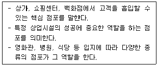
64. 다음 중 매장의 의의 및 역할에 대한 설명으로 가장 옳지 않은 것은?
65. CRM 실행 프로세스를 순차적으로 나열한 항목으로 가장 옳은 것은?
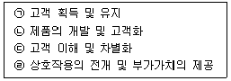
66. 아래 글상자에서 설명하는 표본 추출방법으로 옳은 것은?
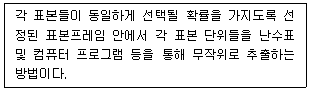
67. 다음 중 고객데이터 분석을 통한 소매 의사결정으로 가장 옳지 않은 것은?
68. 아래 글상자에서 설명하는 대안의 평가 모형으로 가장 옳은 것은?
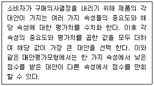
69. 아래 글상자의 괄호 안에 들어갈 용어들의 나열로 옳은 것은?
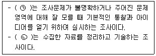
70. CRM 도입의 기대효과에 대한 설명으로 가장 옳지 않은 것은?
4과목: 유통정보
71. 아래 글상자에서 빅데이터에 대한 설명으로 옳지 않은 것을 모두 나열한 것은?
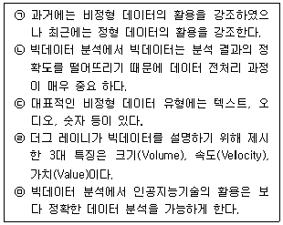
72. 유통업체에서 판매 증진을 위해 활용하는 옴니채널(Omni-Channel) 전략에 대한 설명으로 가장 옳지 않은 것은?
73. 상품식별코드에 관한 설명으로 가장 옳지 않은 것은?
74. 아래 글상자의 내용 중에서 유통업체의 정보시스템 활용과 관련된 특성을 나열한 것으로 가장 옳은 것은?
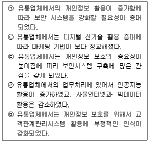
75. 아래 글상자에서 데이터 3법에 해당하는 것을 모두 고른 것은?
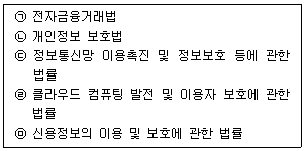
76. 아래 글상자에서 설명하는 내용으로 가장 옳은 것은?
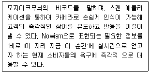
77. 아래 글상자에서 설명하는 빅데이터를 활용한 마케팅 분석기법으로 가장 옳은 것은?
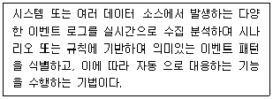
78. 유통업체에서 활용이 증가하고 있는 블록체인에 대한 설명으로 가장 옳지 않은 것은?
79. 개인정보보호법에서 정의하는 개인정보의 정의와 처리에 대한 내용으로 가장 옳지 않은 것은?
80. A사는 전문업체인 B사를 선정하여 유통정보시스템을 구축하고자 한다. 다음 중 사업 착수 후 분석 단계에서 실행되는 활동으로 가장 옳은 것은?
81. 아래 글상자의 괄호 안에 공통적으로 들어갈 용어로 가장 옳은 것은?
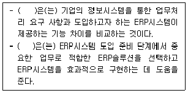
82. ERP 시스템 구축 프로젝트 수행 중 여러 가지 문제의 발생으로 ERP 프로젝트 구축 범위가 변경되어 프로 젝트가 종료되지 않고 지속되는 현상을 나타내는 용어로 가장 옳은 것은?
83. 고객충성도 프로그램에 대한 설명으로 가장 옳지 않은 것은?
84. 전자상거래 시스템 내에서 구현해야 할 보안요건들 중 아래 글상자에서 설명하는 것으로 가장 옳은 것은?
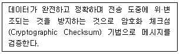
85. 유통업체에서 고객관계관리 시스템의 활용에 대한 설명 으로 가장 옳지 않은 것은?
86. 아래 글상자의 괄호 안에 들어갈 용어로 가장 옳은 것은?
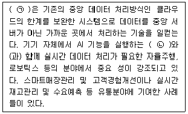
87. 쇼루밍(Showrooming)과 역쇼루밍(Reverse-Showrooming)에 대한 설명으로 가장 옳지 않은 것은?
88. AI는 고도화 수준에 따라 '제한적 인공지능(ANI)', '범용 인공지능(AGI)', '초인공지능(ASI)'으로 구분할 수 있다. 아래 글상자의 내용 중 AGI에 해당되는 설명을 모두 나열한 것은?
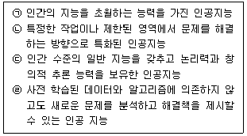
89. 아래 글상자의 괄호 안에 공통적으로 들어갈 용어로 가장 옳은 것은?
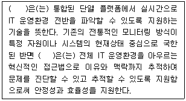
90. 다음 중 데이터 마이그레이션(migration)에 대한 설명 으로 가장 옳지 않은 것은?